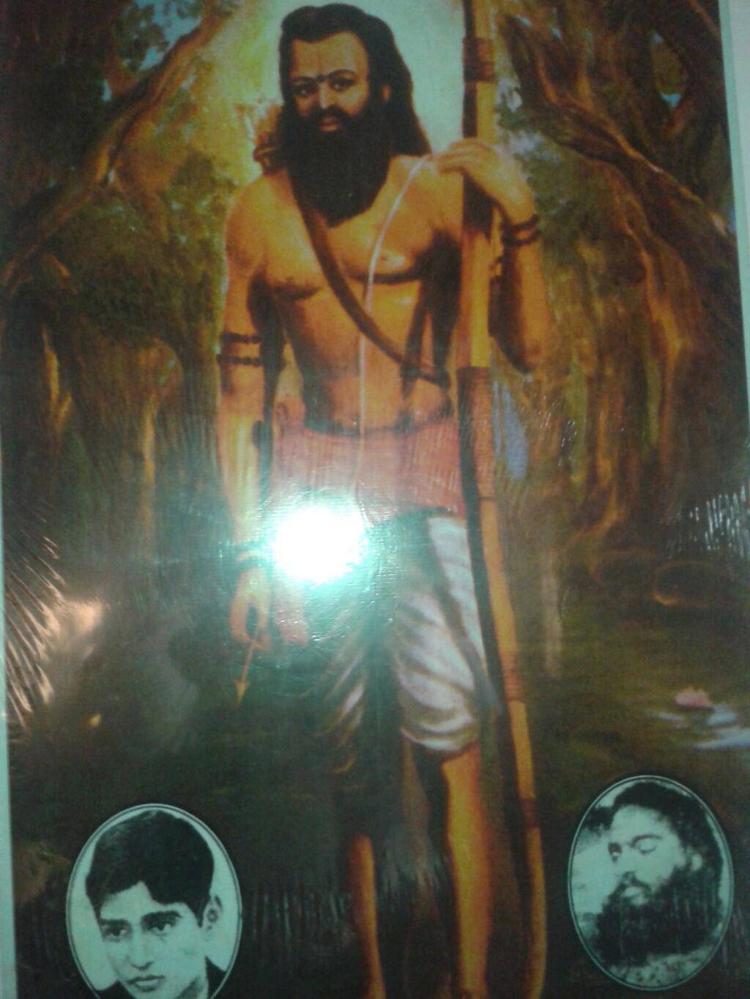

<!DOCTYPE html>
<html>
<head> 
  <link rel="stylesheet" href="body.css"
<title></title>
<style>

h1 {text-align: center;}
</style>

</head>
</html>


<body style="background-color:DodgerBlue;">

  <h1>ALLURI SEETHARAMARAJU</h1>

  
  

<p> Sri Alluri Seetarama Raju is brave son of India who laid down his life to free mother India from the 
oppression of the British. He was born on 4th July 1897. While pursuing his studies at Kakinada, Sri Alluri 
Seetarama Raju came in contact with a notable freedom fighter, Sri Madduri Annapurnayya, and Rallapalli Atchuta 
Ramayya, a scholar of high repute. For his further studies he went to Visakhapatnam at the age of 15. Though he 
didn’t have much interest in studies, he was very keen to know more about the political condition of India at 
that time.</p>

<p>In 1857 during the first war of independence thousands of tribals of Gond land laid their life for their 
country. Sri Alluri Seetarama Raju went deep into the forests of Gond land to meet the tribals and inspire them 
to fight for India’s independence.</p>
<p>In the tribal areas, the poor and illiterate tribal people were exploited and oppressed blatantly by the 
    Britishers. Since the tribals were not united against the Britishers they took advantage of it and deprived 
    the tribals of their rights. Sri Alluri Seetarama Raju inspired and united the different tribes of the area, 
    trained them in skills of guerrilla warfare and proved to be a terror for the Britishers.</p>
<p>Soon he was ready to attack the enemy with his army. On 22nd August 1922, his tribal army initiated their 
    struggle by raiding three police stations Chintapalli Police Station, Krishnadevipeta Police Station, and 
    Rajavommangi on three consecutive days. After the raids they captured a huge number of guns, bayonets and 
    cartridges and swords. They even freed Veerayya Dora from jail who was a revolutionary.
</p>

<p>The British Army was alerted by his actions and platoons of Police and Army were ordered to arrest Sri Alluri 
    Seetarama Raju. He again attacked the British Army at Peddavalasa and defeated them as a result of which they 
    had to bear heavy casualties and finally retreated.</p>
<p>From that day onwards there was a regular warfare between Raju and the Britishers and Raju came out triumphant 
    in all. Nearly for two years(1922 to 1924) he terrorized the British Army and was the ruler of the vast area. 
    Later Britishers were keen to kill him and deployed battalions of Assam Rifles and others. He was killed by 
    the British on May7th 1924.</p>
<a href="https://en.wikipedia.org/wiki/Alluri_Sitarama_Raju" target="_blank">Visit Wikipedia to know more about Alluri Seetha Ramaraju</a> <br>
<a href="Jhansilakhsmibai.html"><button class="btn" style="float:right">Next</button></a> <br>
<a href="subhashchandrabose.html"><button>Previous</button></a>
</body>
</html>